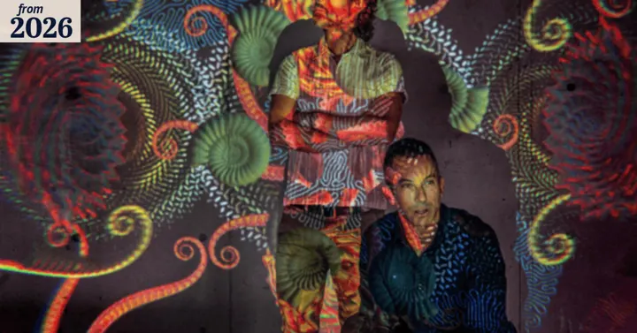
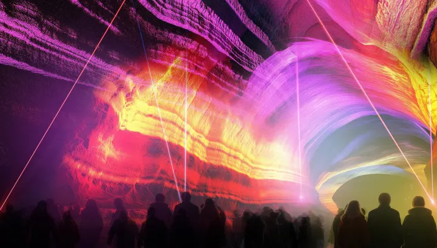
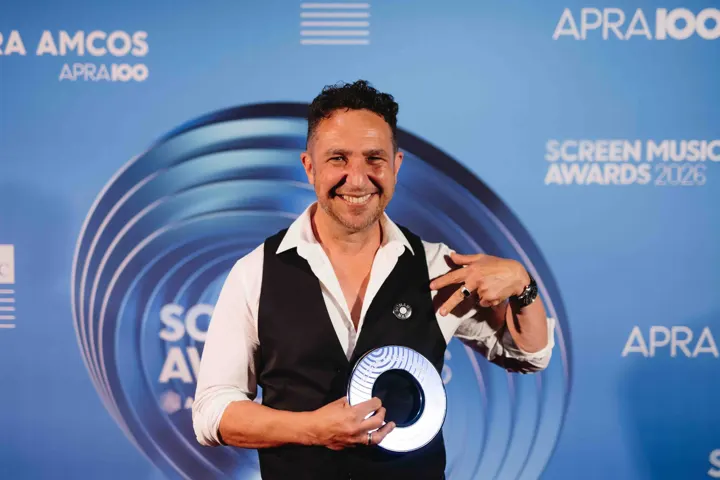

The Sydney Morning Herald
Music / Events
Neon Dynamo and Sonar Music across Vivid Sydney and Sydney New Year's Eve, featuring Jono Ma (composer, Sydney New Year's Eve Midnight Soundtrack) and Antony Partos (co-founder, Sonar Music).
Real stories, linked to the original. Tap the deck page to enlarge.

The Sydney Morning Herald

LBB Online
Campaign Brief

ArtsHub Australia
Next case
Tell us the story. We’ll make it the one people can’t ignore.
Start the conversation →